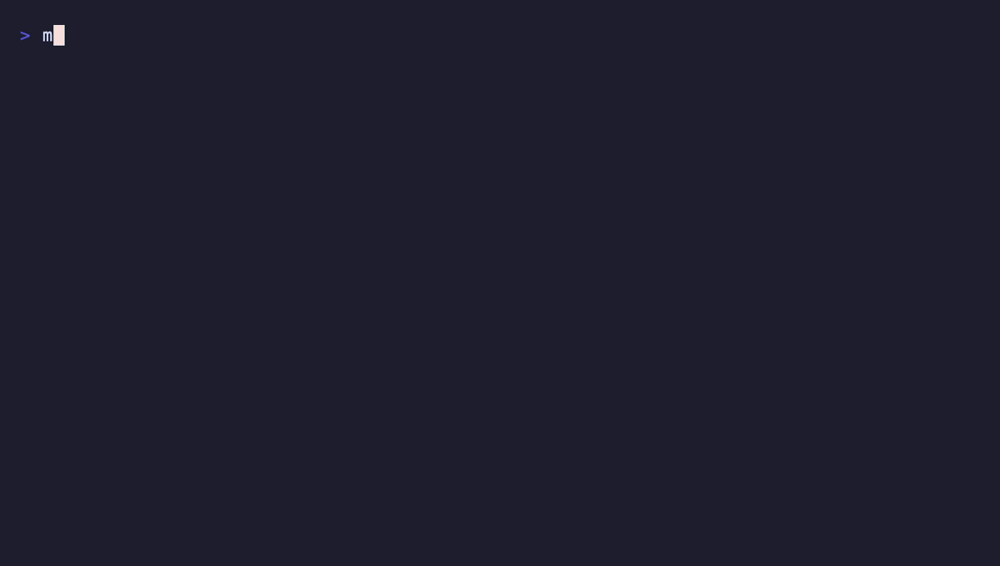

mq-mount mounts Markdown files as a virtual filesystem. Headings become directories and section bodies become files, so ls, cat, grep and any editor just work.
curl -fsSL https://raw.githubusercontent.com/harehare/mq-mount/main/bin/install.sh | bash

Each heading is a directory, and the text under it is its content.md. Nesting follows heading depth, so cd and ls walk the document like a tree.
guide.md mounted at /tmp/mnt/guide/ # Getting Started -> getting-started/content.md # Usage -> usage/content.md ## Tips -> usage/tips/content.md
Everything you need to treat a document as files, without leaving the shell.
Nothing touches your files until you pass --write. --filter always mounts read-only.
Rewrite one section's content.md. Only that part of the source changes; every other byte stays put.
Edits are saved as you wrote them. List markers, table padding and blank lines are not re-rendered.
grep -r for a heading, then cat one section. --toc gives the outline and --full a whole chapter in one read.
--filter takes an mq query. --include and --exclude pick the files in a directory mount.
--slug kebab turns Getting Started into getting-started. Easier to type, easier to script.
Atomic saves from vim and VS Code work. A conflicting change on disk is kept in .conflict-<time>, never dropped.
A 34 MB file with 200,000 sections opens in about a second on an Apple silicon Mac, and a save takes milliseconds.
-d, --list --json and --stop, plus defaults in .mq-mount.toml.
Mount a file, read a section, append to it and add a subsection. The source file changes, and nothing else does.
$ cat guide.md # Getting Started Install the binary and mount a file. # Usage Browse it with ls and cat. $ mq-mount guide.md /tmp/mnt --write --slug kebab -d $ ls /tmp/mnt/guide content.md getting-started usage $ cat /tmp/mnt/guide/getting-started/content.md Install the binary and mount a file. $ echo "Run mq-mount --help for options." >> /tmp/mnt/guide/getting-started/content.md $ mkdir /tmp/mnt/guide/usage/tips $ cat guide.md # Getting Started Install the binary and mount a file. Run mq-mount --help for options. # Usage Browse it with ls and cat. ## tips $ mq-mount --stop /tmp/mnt
One binary. Pick whichever way you like.
curl -fsSL https://raw.githubusercontent.com/harehare/mq-mount/main/bin/install.sh | bash
cargo binstall mq-mount
git clone https://github.com/harehare/mq-mount cd mq-mount cargo build --release
Uses the built-in NFS client. No packages to install.
Needs the mount.nfs helper (nfs-common or nfs-utils) and sudo.
Needs WinFSP. Experimental: not yet verified on a real Windows machine.